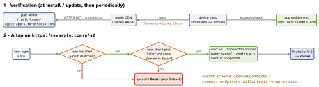

ios-platform · folio
In one line: A Universal Link is a plain https:// URL that opens
your app only if the domain has proved, via its
apple-app-site-association file, that it trusts your app ID; otherwise it
opens the website. A custom scheme (myapp://) is unverified,
can be claimed by any app, and fails when the app is missing. Every entry point
should parse to one route and hand it to one router.
Download PDF Print view LaTeX source


How it works
- AASA: JSON at
https://<domain>/.well-known/apple-app-site-association: no.jsonextension,application/json, valid TLS, no redirects, ≤ 128 KB, unsigned.appIDs=TEAMID.bundle.id.componentsmatch"/"path,"?"query,"#"fragment, with*/?wildcards and"exclude": true; first match wins. The same file also serveswebcredentials(passwords),appclipsandactivitycontinuation(Handoff). - Associated Domains entitlement:
applinks:example.com,applinks:*.example.com. Each subdomain counts as a separate domain;appclips:takes no wildcard. - Apple’s CDN (iOS 14+): the device fetches from Apple, not from you; the CDN fetches within 24 h, devices re-check about weekly — AASA changes are not instant. In development use
applinks:host?mode=developer+ Settings → Developer → Associated Domains Development. - Entry points: a Universal Link is an
NSUserActivity(NSUserActivityTypeBrowsingWeb,.webpageURL). Cold:connectionOptions.userActivitiesinwillConnectTo. Warm:scene(_:continue:). Scheme (CFBundleURLTypes): warmscene(_:openURLContexts:), coldconnectionOptions.urlContexts. SwiftUI:onOpenURLgets both;onContinueUserActivityalso works. - Routing: parse once (
URLComponents→enum Route). Scenes, push taps, Quick Actions and Spotlight all call the same coordinator. At cold start hold the route until the UI and session are ready (e.g. after login).
AASA
{ "applinks": { "details": [ {
"appIDs": ["ABCDE12345.com.you.app"],
"components": [
{ "/": "/help/*", "exclude": true },
{ "/": "/p/*", "?": { "ref": "?*" } }, // needs ?ref=
{ "/": "/order/*" } ] } ] } }Remember
Prove · Tap · Route: the domain proves, the user taps, one coordinator routes.
Example
func scene(_ s: UIScene, willConnectTo _: UISceneSession,
options o: UIScene.ConnectionOptions) {
setUpWindowAndCoordinator() // first
if let url = o.userActivities.first?.webpageURL
?? o.urlContexts.first?.url { coordinator.open(url) } }
func scene(_ s: UIScene, continue ua: NSUserActivity) {
guard ua.activityType == NSUserActivityTypeBrowsingWeb,
let url = ua.webpageURL else { return }
coordinator.open(url) }
func scene(_ s: UIScene,
openURLContexts c: Set<UIOpenURLContext>) {
if let url = c.first?.url { coordinator.open(url) } }
// open: Route(url:) -> show screen; unknown route -> Safari
// SwiftUI: RootView().onOpenURL { router.open($0) }Why did it open Safari?
- AASA invalid or stale: a redirect (proxy 301 to
www), wrong type, bad cert, or the CDN still has the old copy. - Entitlement or team ID wrong; path not matched, or hit an
exclude. - URL typed or pasted into Safari. Only taps count.
- Same-domain navigation: a link on
example.comtoexample.comstays in Safari. - The user once chose Safari (breadcrumb or long-press). This is sticky per domain; long-press → Open in App undoes it.
- Loaded in your own
WKWebView, or a JS redirect with no tap.
Universal Link vs custom scheme
https:// Universal Link | myapp:// scheme | |
|---|---|---|
| proves the app | the domain’s AASA | nothing — any app can claim |
| app not installed | opens the website | fails |
| declared in | Associated Domains | CFBundleURLTypes |
| arrives as | NSUserActivity | UIOpenURLContext |
Traps
- Only handling
scene(_:continue:): cold-start links arrive inwillConnectToand get lost. - Custom schemes are not proof of identity: never put tokens or secrets in them.
- Deferred deep links (install, then land on the content) are not built in: attribution SDK or your own server hand-off.
- Test by tapping (Notes, Messages) or
xcrun simctl openurl booted <url>; see Apple’s copy atapp-site-association.cdn-apple.com/a/v1/<domain>.